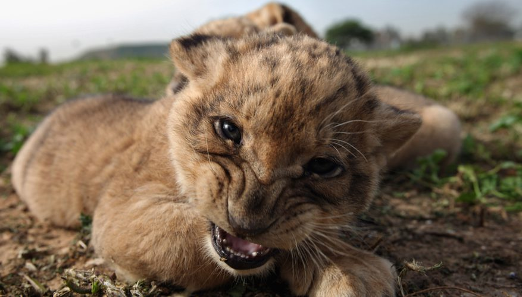
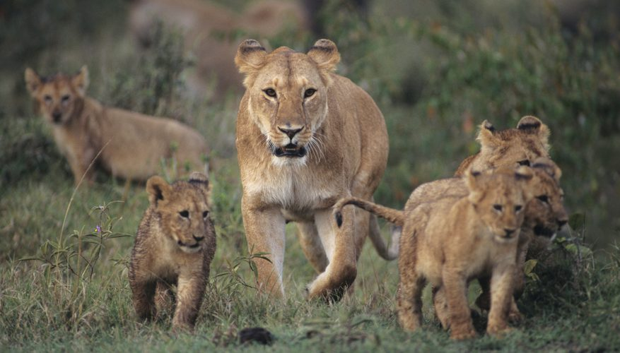

Lion cubs gestate for approximately 110 days and are born in a litter of between one and six babies, although two to three cubs at a time is considered normal by the Predator Conservation Trust. These cats are born helpless and blind away from their pride, as their mothers typically leave to give birth in a safe place shortly before. The mother and cubs stay in isolation for four to eight weeks.